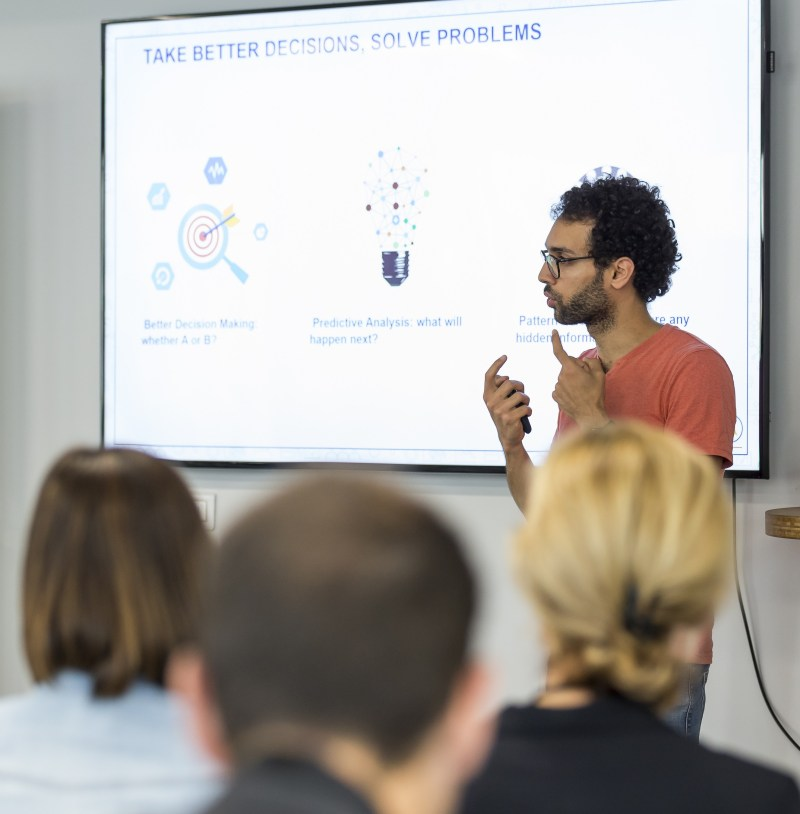

Tarek Mokhtari
Des mathématiques et de la musique
Hello ! Je suis ingénieur en IA et pianiste.
Je crée cette page pour y déposer mon travail sur la sécurité de l'IA. Les gens ne butent pas tous sur la même marche : je veux repérer où chacun en est, ce qui le bloque, et lui donner de quoi passer à la suivante, jusqu'à l'action collective.
Ingénieur des Mines, master recherche en maths appliquées et théorie de l'information. Dix ans entre sûreté nucléaire, énergies renouvelables et conseil en IA.
Je joue du piano depuis plus de trente ans, commencé au conservatoire au Maroc et jamais arrêté : le piano à queue de la chapelle en prépa, le droit de la salle de bricolage aux Mines. Je publie mes enregistrements sur YouTube, où j'ai ajouté un format pédagogique avec les notes qui défilent pendant que je joue lentement. Je donne depuis peu des concerts privés, entrecoupés de textes.
Ce qui m'amuse le plus : repérer un motif dans une pratique et le transporter dans une autre. Le go (j'ai été formateur à la Fédération française), le chaos, la théorie de l'information sont mes terrains préférés pour ça.
En vidéo


Écrits
Ailleurs
Contact
Le plus simple est un e-mail.